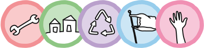

Community Program

Welcome to the Precious Plastic Community Program
The plastic problem is big. At Precious Plastic we believe that it can only be tackled by a strong, united movement of people and projects collaborating together.
Precious Plastic can do a lot to help Precious Plastic Spaces around the world. Likewise, Precious Plastic Spaces around the world can do a lot to help grow the Precious Plastic movement. The stronger Precious Plastic (the movement), the stronger Precious Plastic Spaces, the greater the impact on plastic pollution.
The more you help Precious Plastic the more Precious Plastic will help you! ü§ú ü§õ
üíé What Precious Plastic can do for Spaces
Precious Plastic already provides all the tools and platforms for free for the world to use. On top of that Precious Plastic can help Spaces around the world by featuring them in its communication channels (100K+ combined), feature them in sales channels (IG store, Bazar and more), and opening up partnership opportunities. Amongst other things Precious Plastic can:
- Create IG posts, stories and guides featuring Spaces and their work (~70k)
- Create FB posts featuring Spaces and their work (~50k)
- Feature Spaces in the upcoming IG Shopping driving sales
- Collaborate on projects and partneships with Spaces

üéÅ What Spaces can do for Precious Plastic
Precious Plastic Spaces can greatly help Precious Plastic by crediting and mentioning they’re part of Precious Plastic, this way more people can come across Precious Plastic and grow the movement. Amongst other things Spaces can:
- Mention and credit Precious Plastic on their websites
- Mention and credit Precious Plastic on their social media i.e "Part of @realPreciousPlastic"
- Use #preciousplastic on their posts
- Use our logo generator
- Create how-tos sharing back knowledge with the community

How does it work?
The Community Program aims to help and reward the people and projects contributing the most to grow the Precious Plastic movement. There are different levels, requirements and rewards. Have a dig below to understand how you can be part of it.
| üö© Type | ü§ù Requirements | üí´ Rewards |
|---|---|---|
| Member/Space  | - Be nice - Don’t spam | - Create a profile - Post how-to - Useful things - Comment (soon) |
| Ally | - All of the above - Get 6 stars or more in the Ally Checklist | - Create a pin on the map - Eligible for: communication, sales and partnerships - Eligible to become Verified profile |
| Verified | - All of the above - Get most/all stars in the Ally Checklist - Top quality work | - Verified badge - Ongoing communication and sales opportunities - Eligible for partnerships |
Member/Space
Anyone can become a Member or a Space on the Precious Plastic Community Platform. As a Member or Space you can create your profile, post how-tos, useful things and (soon) comment. The only thing we’re asking you in return is to be nice and not to spam :)
Ally
Precious Plastic Spaces (Workspace, Machine Builder, Collection Point and Community Point) can become an Ally Space by getting at least 6 stars in the Ally Checklist(below). Ally Spaces can create a pin on the map plus they are eligible to be featured in Precious Plastic communication channels (100k+ combined) and the upcoming IG store.
Verified
Ally Spaces can become Verified by getting most/all stars on the Ally Checklist(below) and by creating top quality work. This is still very subjective and is a way for Precious Plastic to highlight greatest Spaces out there. Verified Spaces will receive ongoing promotion, communication and sales opportunities on Precious Plastic channels, client partnerships and the VERIFIED badge on their profile and map pin. Yay üëª
Ally Checklist ✅
The Ally Checklist is a list of things any Space out there can do to help push the Precious Plastic movement. It also helps us to see which Spaces are contributing the most to grow the movement. The more a Space helps Precious Plastic, the more Precious Plastic will help the Space. To become an Ally and Verified you need at the very least 6 stars in the Ally Checlist. How are you scoring? Check below!